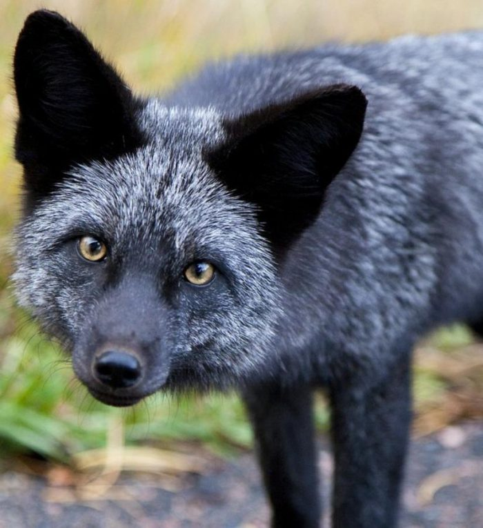

Лисичка Рокси
Угадай какой мультфильм.
🦊 🐰 🏡 🏢 🏠Лисичка Рокси очень ласковая,но пугливая. Она очень любит собачий корм. Живёт она у нас в живом уголке. Рокси родилась на ферме.
Ёжик

Наш ёжик живёт у нас в живом уголке. Также он страдает ожирением. В основном он спит и ест.
Дикобраз Дик

Наш индийский дикобраз по имени Дик очень ласковый и общительный. Обожает когда его гладят по носику. Ему 3 года, в среднем индийские дикобразы живут 15-20 лет.
Хорёк Шансик

Наш хорёк Шансик очень забавный! За это мы зовём его "мышка сосиска". Он норное животное и по этому когда видет мусорное ведро, сумку, рюкзак или обувь залезает туда. Ему 3 года в среднем хорьки живут 15 лет.
Мангусты

У нас 2 мангуста Луи и Нана. Они переданы нам после смерти хозяина.
Чёрный ворон по имени Кара

вОрон и ворОна это 2 разных вида. ВорОны живут в городах, а вОрон на природе. Кара девочка. Она не ручная.
Утка Мартин

Гусь и утка -это две разных птицы. Мартин самец. Он живёт бок о бок со своим другом петухом Петей.
Петух Петя

А вот и друг Мартина по имени Петя. Они живут в одной клетке.